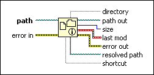

File/Directory Info Function
Owning Palette: Advanced File VIs and Functions
Requires: Base Development System
Returns information about the file or directory specified by path, including its size, its last modification date, whether it is a directory, whether it is a shortcut, and the resolved path if the file or directory is a shortcut. This function does not work for files inside an LLB.
The connector pane displays the default data types for this polymorphic function.

 Add to the block diagram Add to the block diagram |
 Find on the palette Find on the palette |